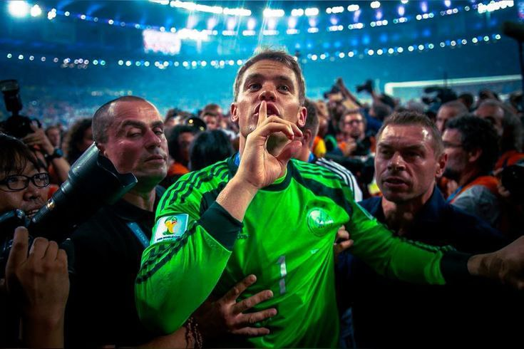

كرة القدم تعتبر من أكثر الأشياء التي أحبها. أستمتع بمتابعة المباريات ومشاهدة البطولات الكبرى، كما أحب متابعة فريقي المفضل بايرن ميونخ.
بايرن ميونخ
مانويل نوير

مانويل نوير يعد من أفضل حراس المرمى في تاريخ كرة القدم. حقق العديد من البطولات مع بايرن ميونخ وكان جزءاً مهماً من فوز منتخب ألمانيا بكأس العالم 2014.